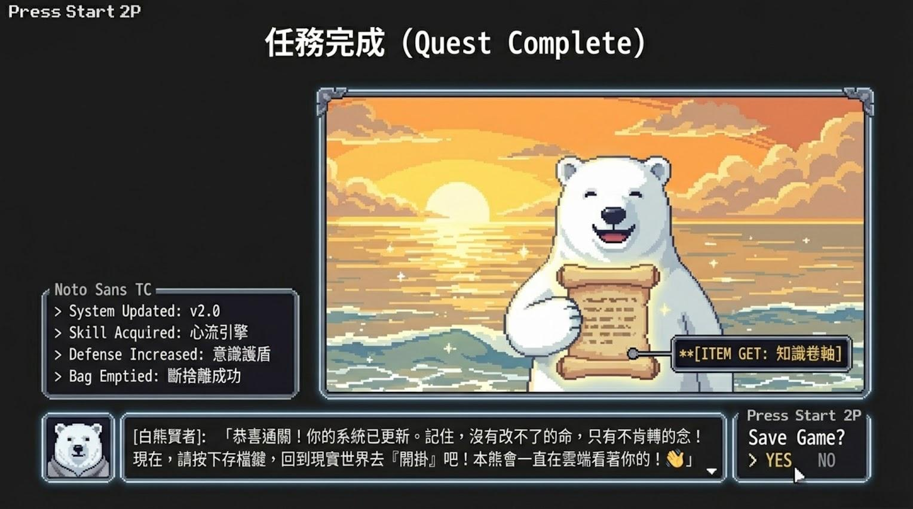

7 天內容試行
先發布 3 天，觀察哪個內耗鉤子最有反應。
這一輪主攻職場內耗族。Day 1 到 Day 3 先測大腦 RAM、願望關鍵字、攝影機思維，後面再接測驗、PDF、模板包與候補名單。
打開 Markdown 排程
Day
標題
目的
CTA
1
你不是懶，是大腦 RAM 爆了
痛點引流
留言「降噪」
2
人生沒進展，是大腦關鍵字設錯了
建立觀念
留言「關鍵字」
3
你的痛苦有 80% 是大腦自己演的劇
情緒共鳴
留言「攝影機」
4
我把人生卡點分成 4 種，你是哪一種？
框架介紹
留言「測驗」
5
你的大腦現在開了幾個分頁？
深度信任
留言「降噪」
6
我示範一次 Life OS 一頁模板怎麼用
產品展示
留言「模板」
7
7 天後，你找到你的內耗根源了嗎？
社群收尾
留言「候補」